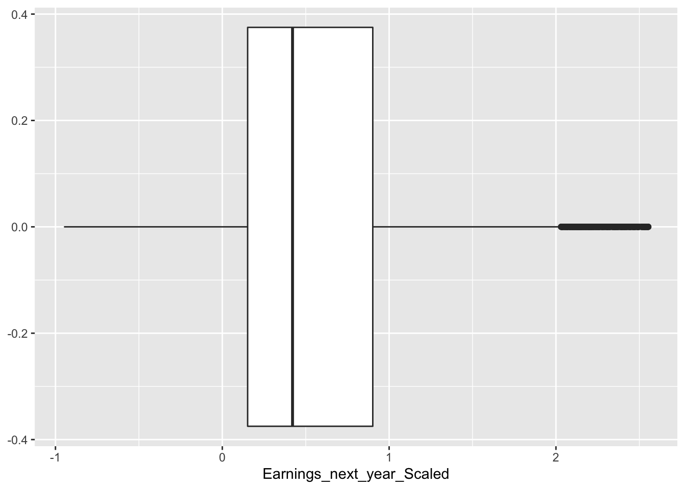
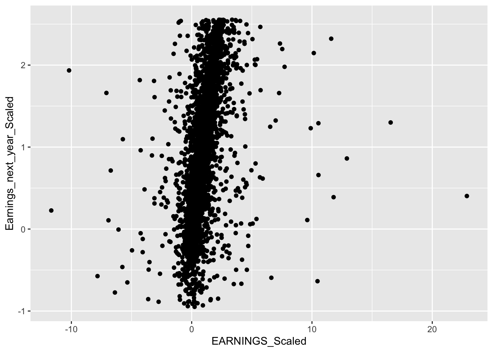
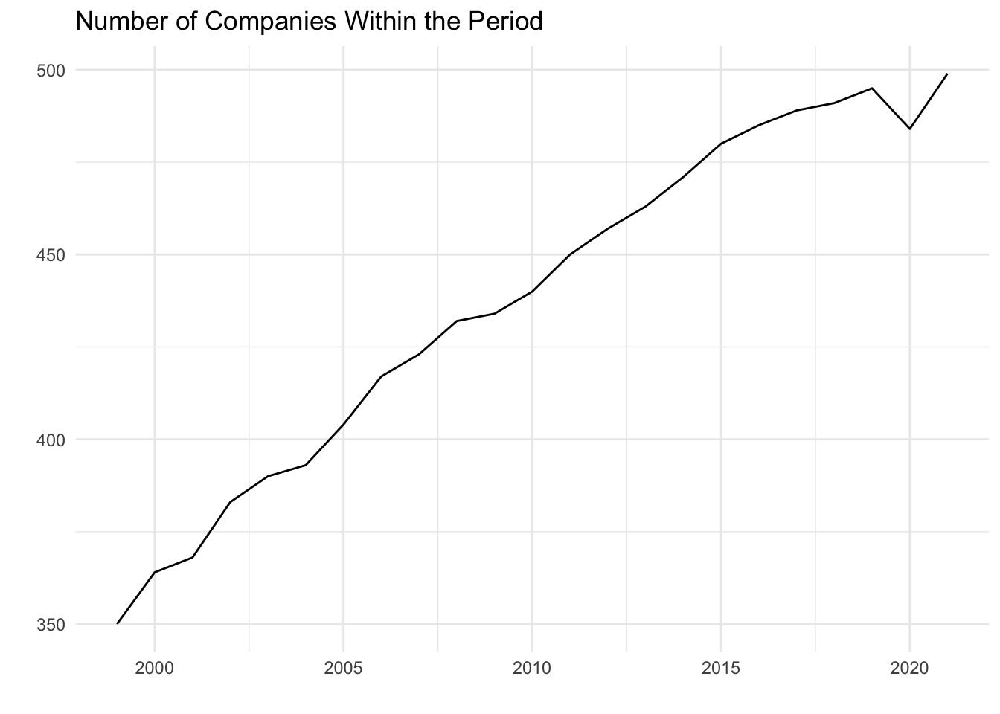

Chapter 2 Data
2.1 Data Source
Our data includes financial information on companies in the S&P 500 stock index from 1999-2021. This information was scraped from Yahoo Finance in November of 2021, and collected in a csv format for data analysis.
To collect the data, first, we got the list of the current 500 S&P companies from Slickchart (https://www.slickcharts.com/sp500). After having the list of the companies, we then moved on to the financials information of the listed companies on yahoo finance (https://finance.yahoo.com/) to get the metrics such as sales, earnings, cogs, stock price, and market sector. We then scraped the data using BeautifulSoup library in Python and turned that into a CSV file.
After getting the data, our main goal is to analyze and model this data to better improve projections for a company’s future metrics, like earnings.
2.2 Variables
The main variables that are used in this project are defined below:
| Variable | Meaning |
|---|---|
| YEAR | The financial year of the company |
| COMPANY | The company’s stock abbreviation symbol |
| MARKET.CAP | The total market capitalization of the company (Volume * Price) |
| EARNINGS | The earnings in dollars for the previous year for the given company |
| SALES | How much the company sold in dollars last year |
| CASH | How much cash the company has in dollars at the end of the previous year |
| Name | The full name of the company |
| Sector | The name of the sector that the company is a part of |
| Earnings_next_year | The amount of money in dollars that the company earns in the following year |
2.3 Data Cleaning
2.3.1 Data Pre-Processing
First, as the earnings, cash and other variables are really large, we have decided to divide them by 1 billion. The reason for that is to make it easier to interpret and to understand the model.
#Scaling Variables of Interest
data <- data %>%
mutate(EARNINGS_Scaled = EARNINGS/1000000000,
CASH_Scaled = CASH/1000000000,
MARKET.CAP_Scaled = MARKET.CAP/1000000000,
Earnings_next_year_Scaled = Earnings_next_year/1000000000,
SALES_Scaled = SALES/1000000000)Next, we added lagged variables for earnings and sales as we believe information from previous years will help predict future metrics.
#Adding Lagged Variables
data <- data %>%
group_by(COMPANY) %>%
mutate(EARNINGS_1_YEAR_AGO = lead(EARNINGS_Scaled, n = 1),
EARNINGS_2_YEAR_AGO = lead(EARNINGS_Scaled, n = 2),
EARNINGS_3_YEAR_AGO = lead(EARNINGS_Scaled, n = 3),
EARNINGS_4_YEAR_AGO = lead(EARNINGS_Scaled, n = 4)) %>%
mutate(SALES_1_YEAR_AGO = lead(SALES_Scaled, n = 1),
SALES_2_YEAR_AGO = lead(SALES_Scaled, n = 2),
SALES_3_YEAR_AGO = lead(SALES_Scaled, n = 3),
SALES_4_YEAR_AGO = lead(SALES_Scaled, n = 4))2.3.2 Graphing Outliers
We will do some more basic exploration regarding our data set, particularly our dependent variable of interest: Earnings the next year. Earnings_next_year_Scaled is the company’s earnings the next year. So Earnings_next_year_Scaled value of 1 for Company X in 2015 can be interpreted as 1 billion dollars in earnings in 2016.
We explore Earnings next year below:
#Graphing Outliers
data %>% ggplot(aes(x = Earnings_next_year_Scaled)) +
geom_boxplot()data %>% ggplot(aes(x = EARNINGS_Scaled, y= Earnings_next_year_Scaled))+
geom_point()There is a high number of outliers in our data, this is not ideal as we do not want to fit a model that includes outliers as predicting and modeling posterior distributions would be hard in the grand scheme.
We removed outliers by classifying them as one if they are outside the range of +/- (0.9 * IQR) (Interquartile Range).
Q <- quantile(data$Earnings_next_year_Scaled, probs=c(.25, .75), na.rm = TRUE)
iqr <- IQR(data$Earnings_next_year_Scaled, na.rm = TRUE)
up <- Q[2]+.90*iqr # Upper Range
low<- Q[1]-.90*iqr # Lower Range
eliminated<- subset(data, data$Earnings_next_year_Scaled > (low) & data$Earnings_next_year_Scaled < (up))
data_elimatedO <- eliminatedWe graph the data points without outliers below:
data_elimatedO %>% ggplot(aes(x = Earnings_next_year_Scaled)) +
geom_boxplot()
data_elimatedO %>% ggplot(aes(x = EARNINGS_Scaled, y= Earnings_next_year_Scaled))+
geom_point()
This is much better as the data points are closer in proximity.
2.4 Initial Explorations
After collecting the data, we then looked for the distribution of the companies within the S&P 500. The first plot we are going to create is the number of companies within the period:

As we see above, we have data for about 70% of the companies in the S&P 500 for the first year of our data, and by 2021 we have about every single company within the index. It is important for us to have data on as many companies as possible over this time period so that we can better capture trends and make more accurate models based on the data.
Next, we investigated how market cap, specifically the sum of all the companies’ market caps, varied from year to year. By grouping by year, we were able to easily combine each companies market cap together to create the plot above. This plot highlights trends in the overall market, we see a general increase over time in market cap, with sharp decreases around 2008 and 2020. Those two years align with the housing market crash and COVID respectively, both which led to decreases in the stock market. By identifying trends in the overall market, we may have a better idea about how individual companies may perform.
Our main objective with this project is to be able to accurately predict future earnings using metrics like sales, previous earnings, and other variables like the sector of the company. We found that overall, among the top 50 companies (based on market cap), there were positive relationships between earning and sales. This relationship varies based on the market sector, with IT having the most positive relationship, and Consumer Staples having the least positive relationship. This indicates to us that both sector and sales may be important predictors of earnings that we should explore using in our future models.
For most sectors, it appears that the farther back we go, the flatter the relationship between Earnings and past earnings is. If we plot earnings next year with earnings four years ago, we will see that almost all sectors have different slopes.